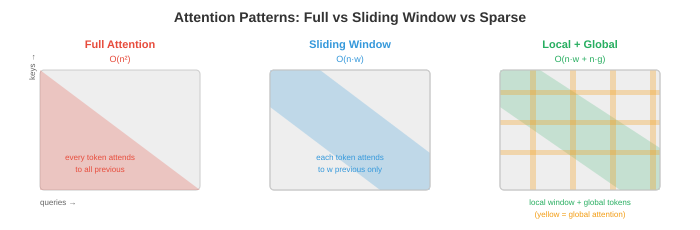

Efficient Architectures¶
Making models faster is not just about lower precision, it is also about smarter architectures that do less work per token. This file covers StreamingLLM, sparse and linear attention, multi-query and grouped-query attention, Mixture of Experts at inference, knowledge distillation, pruning, and neural architecture search
- Quantisation (file 1) makes each operation cheaper. This file makes fewer operations happen in the first place. The two are complementary: a model that is both architecturally efficient and quantised can be 10-100x faster than the original.
StreamingLLM: Infinite-Length Generation¶
-
Standard transformers store all previous tokens in the KV-cache, which grows linearly with sequence length. At some point, the cache exceeds GPU memory and generation fails. StreamingLLM (Xiao et al., 2023) solves this with a fixed-size rolling KV-cache.
-
The key observation: the first few tokens in a sequence receive disproportionately high attention scores regardless of their content. These are called attention sinks. If you evict them from the cache, the attention distribution collapses and generation quality degrades catastrophically.
-
StreamingLLM's solution: keep a small number of sink tokens (the first 1-4 tokens) permanently in the cache, plus a rolling window of the most recent \(w\) tokens. The total cache size is \(\text{sink} + w\), which is fixed regardless of how many tokens have been generated.
-
The attention sinks anchor the softmax distribution, and the rolling window provides recent context. This enables infinite-length generation with constant memory, at the cost of losing access to middle-of-sequence context.
-
StreamingLLM works without any retraining for models that naturally develop attention sinks (most pre-trained LLMs do). For models that do not, adding a single learnable sink token during training fixes it.
Sparse Attention¶
- Full self-attention is \(O(n^2)\) in sequence length \(n\) because every token attends to every other token. For \(n = 128K\), the attention matrix has \(128K^2 = 16\) billion entries. Sparse attention patterns reduce this by restricting which tokens attend to which.

-
Sliding window attention (Mistral, Gemma): each token attends only to the previous \(w\) tokens (e.g., \(w = 4096\)). Attention is \(O(n \cdot w)\) instead of \(O(n^2)\). Information propagates beyond the window through multiple layers: after \(L\) layers, the effective context is \(L \times w\).
-
Local + global attention (Longformer, BigBird): most tokens use sliding window attention (local), but a few designated tokens (e.g., [CLS], every 512th token) attend to all tokens (global). This captures both local patterns and long-range dependencies.
-
Dilated attention: attend to every \(k\)-th token within a window, creating a sparse pattern that covers a larger range with the same number of attention scores. Increasing dilation across layers creates a hierarchical pattern similar to dilated convolutions (chapter 8).
-
The practical winner for modern LLMs is sliding window + full attention interleaved: some layers use sliding window (cheap, handles local context), some layers use full attention (expensive, captures long-range). Mistral/Mixtral use this pattern.
Linear Attention and State-Space Models¶
-
Can we replace the \(O(n^2)\) attention entirely? Linear attention and state-space models (SSMs) process sequences in \(O(n)\) time by avoiding the explicit attention matrix.
-
Linear attention replaces the softmax attention with a kernel approximation:
-
By associating the \(K^T V\) product first (which is \(d \times d\), independent of sequence length), the computation becomes \(O(n \cdot d^2)\) instead of \(O(n^2 \cdot d)\). For long sequences where \(n \gg d\), this is a massive saving.
-
RWKV combines ideas from RNNs and transformers. It uses a recurrent formulation that processes tokens sequentially (like an RNN) but can be parallelised during training (like a transformer). Inference is \(O(1)\) per token (constant memory, no KV-cache growth).
-
Mamba (Gu & Dao, 2023) is a selective state-space model. It processes sequences through learned state transitions:
-
where \(\bar{A}\) and \(\bar{B}\) are input-dependent (selective), allowing Mamba to dynamically focus on or ignore parts of the input. Unlike fixed SSMs, the selectivity makes Mamba competitive with transformers on language tasks while maintaining \(O(n)\) scaling.
-
The tradeoff: linear attention and SSMs are faster for long sequences but generally less capable than full attention for tasks requiring precise long-range retrieval. Hybrid architectures (some transformer layers + some Mamba layers) often give the best of both worlds.
Multi-Query and Grouped-Query Attention¶
-
Standard multi-head attention (MHA, chapter 7) uses separate \(K\), \(V\) projections for each head. For \(h\) heads, this means \(h\) separate key and value tensors in the KV-cache. Multi-Query Attention (MQA) and Grouped-Query Attention (GQA) reduce this.
-
MQA (Shazeer, 2019): all heads share a single set of \(K, V\) projections. Each head still has its own \(Q\) projection. The KV-cache shrinks by a factor of \(h\) (e.g., 32x for 32 heads).
-
GQA (Ainslie et al., 2023): a middle ground. Heads are grouped, and each group shares one set of \(K, V\) projections. With \(h = 32\) heads and \(g = 8\) groups, each group of 4 heads shares K/V. The KV-cache shrinks by \(h/g = 4\)x.

- Most modern LLMs use GQA (Llama 2/3, Gemma, Mistral). It reduces KV-cache memory and inference latency with negligible quality loss compared to MHA.
Multi-head Latent Attention (MLA)¶
- MLA (DeepSeek-V2, 2024) goes further than GQA by compressing the KV-cache into a low-rank latent space. Instead of caching full key and value vectors, MLA caches a compressed latent vector \(\mathbf{c}_t\) per token and reconstructs K/V on the fly during attention:
-
The compressed vector \(\mathbf{c}_t\) is much smaller than the original K and V combined. DeepSeek-V2 achieves a 93.3% reduction in KV-cache size compared to MHA, outperforming even MQA, while maintaining MHA-level quality.
-
The tradeoff: reconstructing K/V from the latent adds a small compute cost per attention operation. But since LLM decode is memory-bandwidth-bound (not compute-bound), this is a net win: less memory to load > slightly more compute per token.
Flash Attention¶
-
Flash Attention (Dao et al., 2022, covered in detail in chapter 16 file 05) is not an architectural change but an implementation optimisation that belongs in any discussion of efficient attention. It computes exact standard attention with:
- O(n) memory instead of O(n²) (the attention matrix is never materialised in HBM).
- 2-4x faster than standard attention (by keeping data in SRAM via tiling and online softmax).
- No quality loss — the output is mathematically identical to standard attention.
-
Flash Attention is now the default attention implementation in PyTorch (
torch.nn.functional.scaled_dot_product_attention), JAX, and all major inference frameworks. If you are running attention in 2024+, you are almost certainly using Flash Attention.
Ring Attention¶
-
Ring Attention (Liu et al., 2023) distributes attention computation across multiple devices for sequences that are too long to fit on a single GPU's memory, even with Flash Attention.
-
The idea: partition the sequence across \(N\) devices. Each device holds \(n/N\) tokens' Q, K, V. The devices are arranged in a ring. In each step:
- Each device computes local attention (its Q against its local K/V).
- Each device sends its K/V block to the next device in the ring.
- Each device receives K/V from the previous device and computes attention against those.
- After \(N\) steps, every device has attended to every K/V block.
-
Communication is overlapped with computation: while computing attention on the current K/V block, the next block is being transferred. This hides the communication latency almost entirely.
-
Ring Attention enables million-token context windows by distributing the KV-cache across a ring of GPUs. The memory per device is O(n/N), making arbitrarily long sequences feasible (limited only by the number of devices).
Mixture of Experts at Inference¶
-
MoE models (chapter 7) activate only a fraction of their parameters per token (typically 2 out of 8 experts). At inference, the unique challenge is expert caching: all experts must be in memory (because any token might route to any expert), but only 2 are active per token.
-
For a Mixtral 8x7B model: total parameters = 47B (8 × 7B experts, but with shared components). Active parameters per token ≈ 13B (2 experts + shared layers). The model has LLM-70B-class quality with LLM-13B-class inference cost, but requires 47B parameters in memory.
-
Expert offloading: for GPU-memory-constrained deployment, keep inactive experts on CPU or SSD and load them on demand. This works because token routing is predictable enough to prefetch the likely experts.
-
Expert caching: maintain an LRU cache of recently used experts in GPU memory. If the same experts are repeatedly activated (common for in-domain data), the cache hit rate is high.
Knowledge Distillation¶
- Distillation (chapter 6) trains a small "student" model to mimic a large "teacher." The student learns from the teacher's soft predictions (probability distributions over classes), which contain more information than hard labels alone.
-
where \(T\) is the temperature (higher \(T\) softens the distributions, revealing the teacher's uncertainty) and \(\alpha\) balances the distillation loss with the standard cross-entropy loss.
-
For LLMs: distillation is used to create small, fast models from large, capable ones. GPT-4 → a 7B student that captures most of GPT-4's behaviour for a specific task. The student can be 10-100x cheaper to serve.
-
Task-specific distillation: distil only on data relevant to your deployment task. A 7B model distilled on medical Q&A from a 70B teacher can outperform the 70B model on that specific task (because the student's limited capacity is entirely focused on the target domain).
Pruning¶
-
Pruning removes unnecessary weights (setting them to zero), reducing model size and computation.
-
Unstructured pruning (magnitude-based): remove individual weights with the smallest absolute values. This creates a sparse weight matrix. Simple and effective for compression, but current hardware (GPUs) cannot accelerate sparse operations efficiently unless the sparsity follows specific patterns.
-
Structured pruning: remove entire units — attention heads, MLP neurons, or layers. This produces a smaller dense model that is straightforward to accelerate on standard hardware. The tradeoff is coarser granularity (removing a full head might remove useful and useless weights together).
-
2:4 sparsity (NVIDIA Ampere+): a hardware-supported sparsity pattern where 2 out of every 4 weights are zero. The GPU's sparse Tensor Cores skip the zero multiplications, achieving ~2x speedup. This is the only sparsity pattern with practical hardware acceleration today.
-
Lottery Ticket Hypothesis (Frankle & Carlin, 2019): within a randomly initialised network, there exists a subnetwork (the "winning ticket") that can be trained in isolation to match the full network's performance. Finding these subnetworks (by training, pruning, and rewinding) is expensive, but the insight motivates pruning research.
Neural Architecture Search (NAS)¶
-
NAS automates architecture design by searching over a space of possible architectures to find the one that maximises accuracy subject to hardware constraints (latency, memory, power).
-
EfficientNet (chapter 8) was found by NAS: the compound scaling rule (balance depth, width, resolution) emerged from the search, not from human intuition.
-
For inference efficiency, NAS can find architectures optimised for specific hardware targets: "find a model with <5ms latency on an iPhone Neural Engine and >80% accuracy on ImageNet." The search space includes layer types, widths, activation functions, and attention patterns.
-
Once-for-all networks train a single overparameterised network and extract subnetworks for different deployment targets. One training run produces models for cloud GPU, mobile GPU, and CPU, each optimised for its target.
Coding Tasks (use CoLab or notebook)¶
-
Implement sliding window attention and compare memory usage against full attention.
import jax import jax.numpy as jnp def full_attention(Q, K, V): """Standard O(n^2) attention.""" scores = Q @ K.T / jnp.sqrt(Q.shape[-1]) weights = jax.nn.softmax(scores, axis=-1) return weights @ V def sliding_window_attention(Q, K, V, window_size=128): """Sliding window attention: each token attends to window_size previous tokens.""" n = Q.shape[0] d = Q.shape[-1] output = jnp.zeros_like(Q) for i in range(n): start = max(0, i - window_size + 1) k_window = K[start:i+1] v_window = V[start:i+1] scores = Q[i] @ k_window.T / jnp.sqrt(d) weights = jax.nn.softmax(scores) output = output.at[i].set(weights @ v_window) return output n, d = 512, 64 key = jax.random.PRNGKey(0) Q = jax.random.normal(key, (n, d)) K = jax.random.normal(jax.random.PRNGKey(1), (n, d)) V = jax.random.normal(jax.random.PRNGKey(2), (n, d)) print(f"Full attention memory: O(n^2) = {n*n} entries") print(f"Window (w=128) memory: O(n*w) = {n*128} entries") print(f"Reduction: {n*n / (n*128):.1f}x") -
Compare the KV-cache size for MHA, GQA, and MQA. Show why GQA is the practical sweet spot.
def kv_cache_size(n_heads, n_kv_heads, d_head, seq_len, bytes=2): """KV-cache size in MB.""" return 2 * n_kv_heads * d_head * seq_len * bytes / 1e6 n_heads = 32 d_head = 128 seq_len = 32768 mha = kv_cache_size(n_heads, n_heads, d_head, seq_len) # 32 KV heads gqa = kv_cache_size(n_heads, 8, d_head, seq_len) # 8 KV heads mqa = kv_cache_size(n_heads, 1, d_head, seq_len) # 1 KV head print(f"MHA (32 KV heads): {mha:.0f} MB per layer") print(f"GQA (8 KV heads): {gqa:.0f} MB per layer ({mha/gqa:.0f}x smaller)") print(f"MQA (1 KV head): {mqa:.0f} MB per layer ({mha/mqa:.0f}x smaller)") -
Simulate structured pruning by removing the least important attention heads from a random attention layer and measuring the output change.
import jax import jax.numpy as jnp key = jax.random.PRNGKey(0) n_heads, seq_len, d_head = 8, 64, 32 # Random multi-head attention output (one per head) head_outputs = jax.random.normal(key, (n_heads, seq_len, d_head)) # Full output: concatenate all heads full_output = head_outputs.reshape(seq_len, n_heads * d_head) # Importance: measure each head's contribution by its norm head_norms = jnp.linalg.norm(head_outputs, axis=(1, 2)) print("Head importance (by norm):", jnp.round(head_norms, 2)) # Prune least important heads for n_keep in [8, 6, 4, 2]: top_heads = jnp.argsort(head_norms)[-n_keep:] pruned = head_outputs[top_heads].reshape(seq_len, n_keep * d_head) # Pad to original size for comparison (zero out pruned heads) full_pruned = jnp.zeros_like(head_outputs) full_pruned = full_pruned.at[top_heads].set(head_outputs[top_heads]) full_pruned = full_pruned.reshape(seq_len, n_heads * d_head) error = jnp.linalg.norm(full_output - full_pruned) / jnp.linalg.norm(full_output) print(f"Keep {n_keep}/{n_heads} heads: relative error = {error:.4f}, " f"memory = {n_keep/n_heads:.0%}")